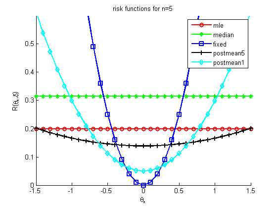
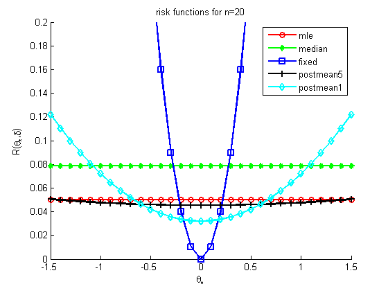

ns = [5 20];
for ni=1:length(ns)
n = ns(ni);
mus = -1.5:0.1:1.5;
M = length(mus);
n0 = 1;
n0B = 5;
mu0 = 0;
r1 = (1/n) * ones(1,M);
r2 = (pi/(2*n)) * ones(1,M);
r3 = (mus-mu0).^2;
r4 = (n+n0)^(-2) * (n + n0^2*(mu0-mus).^2);
r5 = (n+n0B)^(-2) * (n + n0B^2*(mu0-mus).^2);
figure; hold on
plot(mus, r1, 'r-o', 'linewidth', 2);
plot(mus, r2, 'g-*', 'linewidth', 2);
plot(mus, r3, 'b-s', 'linewidth', 2);
plot(mus, r4, 'k-+', 'linewidth', 2);
plot(mus, r5, 'c-d', 'linewidth', 2);
if ni==1
set(gca,'ylim',[0 0.6])
else
set(gca,'ylim',[0 0.2])
end
legend('mle','median','fixed','postmean5', 'postmean1')
xlabel('\theta_*')
ylabel('R(\theta_*,\delta)')
title(sprintf('risk functions for n=%d', n))
printPmtkFigure(sprintf('riskFnGaussN%d', n))
end
 